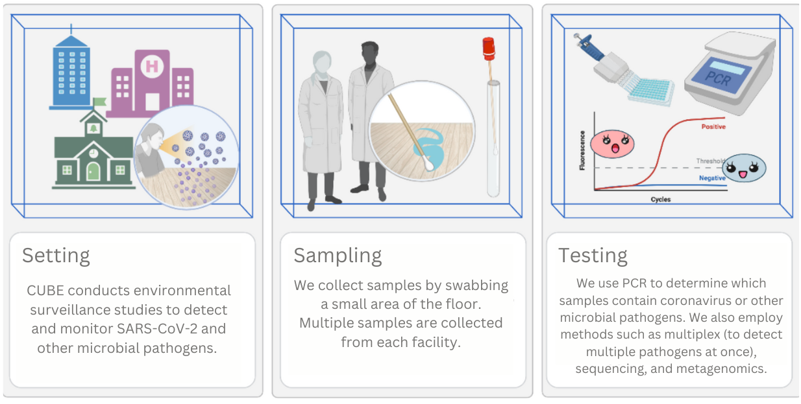

Our research team has conducted environmental surface surveillance studies at 42 buildings to date across Toronto, Ottawa, and Sault Ste. Marie, including 10 long-term care homes, 11 schools and day-cares, 6 university buildings, and 6 public libraries.
We swab floors to collect SARS-CoV-2 RNA (the virus's genetic material) and the genetic material of other microbial pathogens, which are then analyzed using advanced laboratory-based genetic methods. Our project aims to detect and monitor the presence of SARS-CoV-2 and other microbial pathogens in congregate settings, particularly those with vulnerable populations such as hospitals and long-term care homes.
Most facilities are swabbed once or twice weekly for a number of months.
qPCR swab results can be generated as quickly as within 48 hours from sample collection.
Our initial work focused on the detection and monitoring of SARS-CoV-2. Since then, we have expanded our studies to detect other microbial pathogens, including MRSA, VRE, tuberculosis, E. coli, and, more recently, H5N1.
Our research team has members affliated with The Ottawa Hospital, Children’s Hospital of Eastern Ontario, Sinai Health System, University of Ottawa, Carleton University, University of Toronto, University of Waterloo, McGill University, NOSM University, and the Sault Area Hospital
CUBE’s research has received funding support from CIHR, NSERC, Coronavirus Variants Rapid Response Network (CoVaRR-NET), Ottawa Hospital Academic Medical Organization (TOHAMO), University of Ottawa, Carleton University, Northern Ontario Academic Medicine Association (NOAMA), University of Toronto Data Sciences Institute, University of Toronto Emerging and Pandemic Infections Consortium (EPIC). Our industry partner, DNA Genotek, has provided the sample collection kits in-kind.